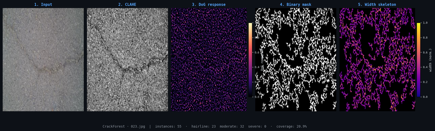
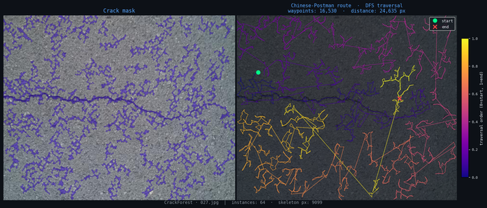

A hybrid pipeline for detecting, measuring, and routing over surface cracks. Classical preprocessing isolates crack ridges; classical morphology measures them; and a graph route-planner turns the detected crack network into a traversal a repair platform can follow. Built and measured on the public CrackForest dataset, CPU-only, no model weights to download.
Problem
Road-surface cracks are thin, low-contrast, and morphologically irregular. A missed crack becomes an expensive return visit for a repair crew; a false positive wastes pennies of sealant. That cost asymmetry shapes every decision below — recall is the binding constraint.
Approach
Preprocessing. CLAHE normalizes local contrast so faint cracks read consistently across lighting; a Difference-of-Gaussians band-pass then enhances thin crack ridges while suppressing surface texture at the wrong scale.
Localization & measurement. The crack mask is split into instances with eight-connectivity connected components — eight-way rather than four-way specifically so diagonally-touching crack pixels stay in one component, which keeps the crack network connected for routing. Each instance is skeletonized; width is read directly as 2 × EDT at the skeleton (the Euclidean distance transform), giving per-segment length, width, and a severity proxy with no learned width head.
Route planning. The skeleton becomes an 8-connected weighted graph — a node per skeleton pixel, cardinal neighbours weighted 1 and diagonals √2 — and small components are dropped. Solving the Chinese Postman (Route Inspection) problem on each connected component — odd-degree matching on shortest-path distances, path duplication to make the graph Eulerian, then an Eulerian circuit via Hierholzer's algorithm (all delegated to networkx's tested eulerize) — yields a walk that covers every skeleton edge. That ordered waypoint sequence is the path a repair platform follows. For very large components the optimal matching is expensive, so above a node cap the route falls back to a depth-first traversal that still visits everything but isn't length-optimal; the output flags which mode produced it, so the guarantee is never overstated.
Why classical here
Deep learning is the right tool where semantics dominate. But for localization and measurement, classical methods carry the load: when the filter misfires — road texture at the right scale, say — the response makes it immediately visible why, and the fix (CLAHE pre-normalization, gamma tuning) is deterministic. A learned decoder offers no such diagnostic handle, and width-from-EDT is closed-form and checkable against the source image.


Results
Measured on CrackForest, CPU-only (Intel Core i7, Windows 10). Numbers refresh on each run; the figures above reproduce from scripts/gen_figures.py.
| Mean runtime | 786 ms / image |
| Median runtime | 745 ms / image |
| Range | 368 – 1375 ms |
| Mean instances detected | 86 / image |
| Mean crack pixel coverage | 4.97 % |
Limits & next steps
The ridge filter responds to any elongated dark structure at the right scale — sealed cracks, painted markings, and oil stains can produce false positives. Severity thresholds are in pixel units and need a field calibration step (pixels-per-mm from camera intrinsics) before the labels are operationally meaningful. Wet surfaces and heavy shadows suppress local contrast enough to cause misses. The natural extension is feeding the Chinese Postman waypoint sequence into a ROS navigation stack for autonomous follow-along; that navigation layer was built against platform-specific hardware in the original deployment and is documented separately.